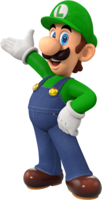
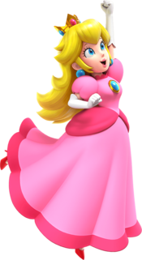
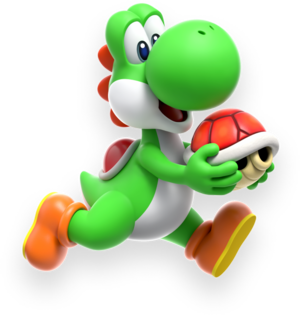
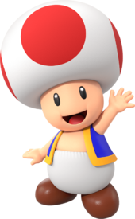
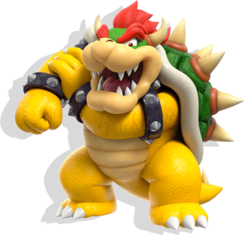

Meet Mario Friends
Here are some of Mario's most notable friends and their basic characteristics:

Luigi
Mario's younger brother. He's taller and thinner than Mario, often depicted as most cautious and timid, but very brave when it counts. He wears a green hat and overalls.

Princess Peach
The ruler of Mushroom Kingdom. Known for her kindness, grace and leadership. Ofen the damsel in distress but also take an active role in various adventures. She wears a pink dress and crown

Yoshi
A friendly dinosaur who helps Mario by giving him rides and using his long tongue to eat enemies and obstacles. Known for his loyalty and cheerful demeanor. Yoshi comes in various colors, but green is the most iconic.

Toad
A loyal attendant to Princess Peach and a resident to the Mushroom Kingdom. Known for his mushroom-shaped head and blue vest. he's helpful, brave, and always eager to assist Mario in his quests

Bowser
He is a large, powerful, and fearsome creature resembling a dragon-turtle hybrid. Known for his imposing size, spiked shell, and fiery breath. Bowser's main goal is often to kidnap Princess Peach and conquer the Mushroom Kingdom.